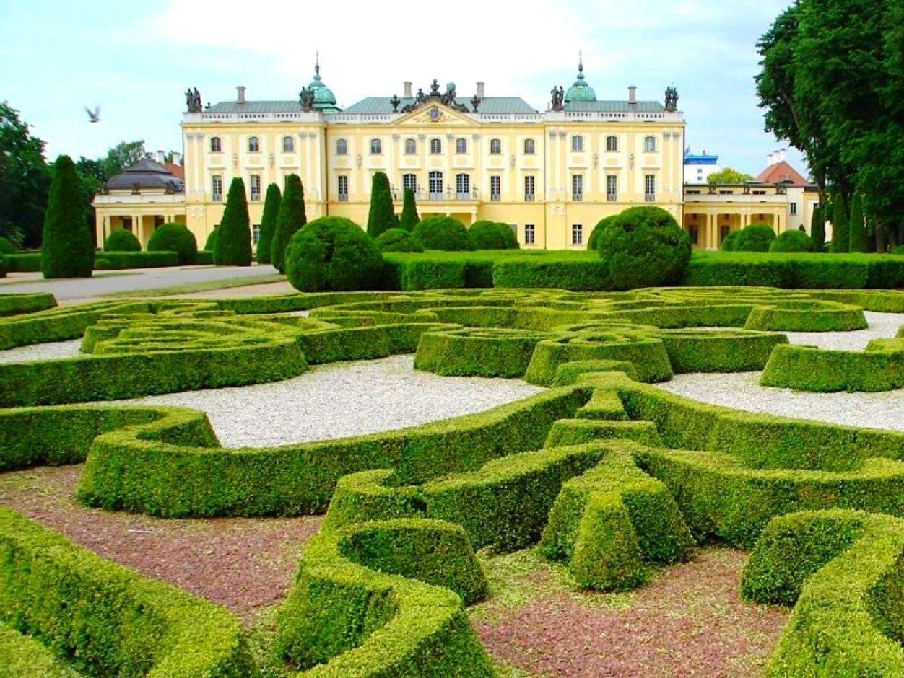
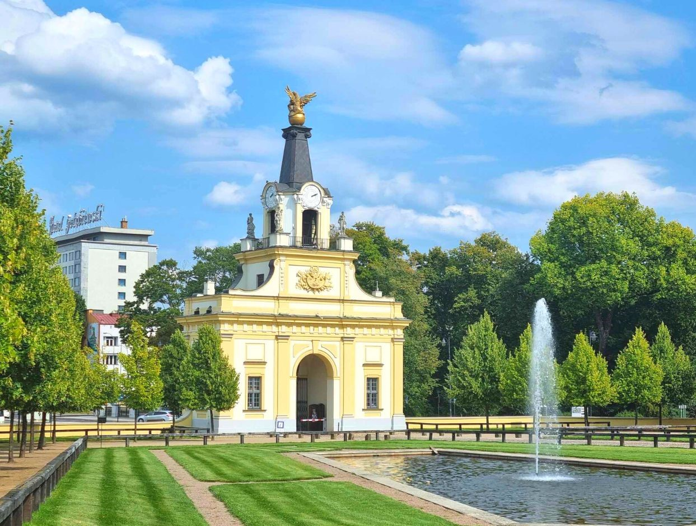
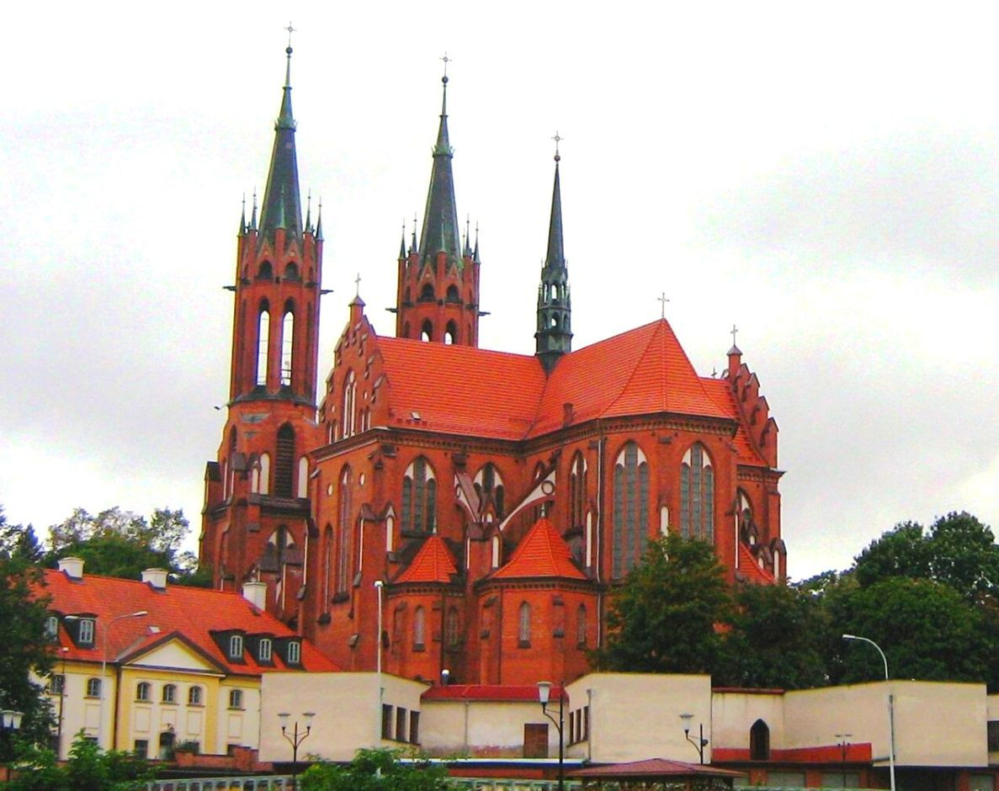
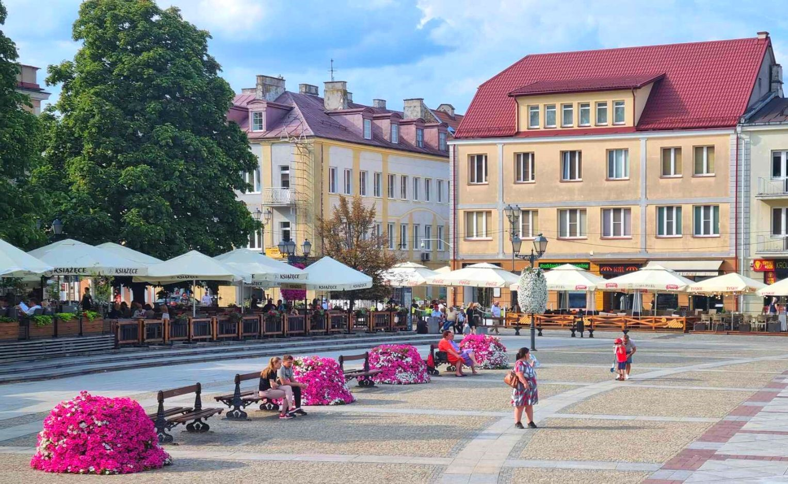
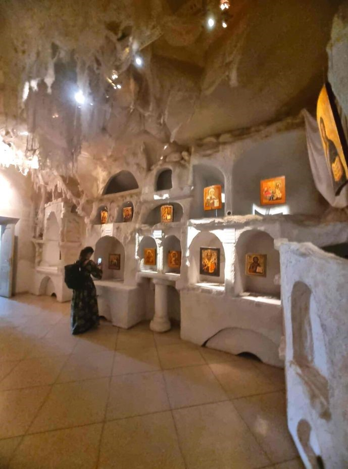
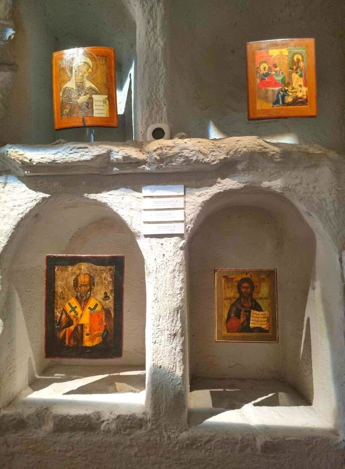
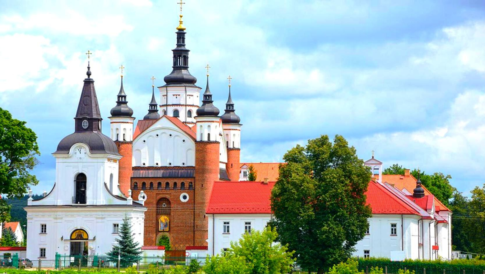
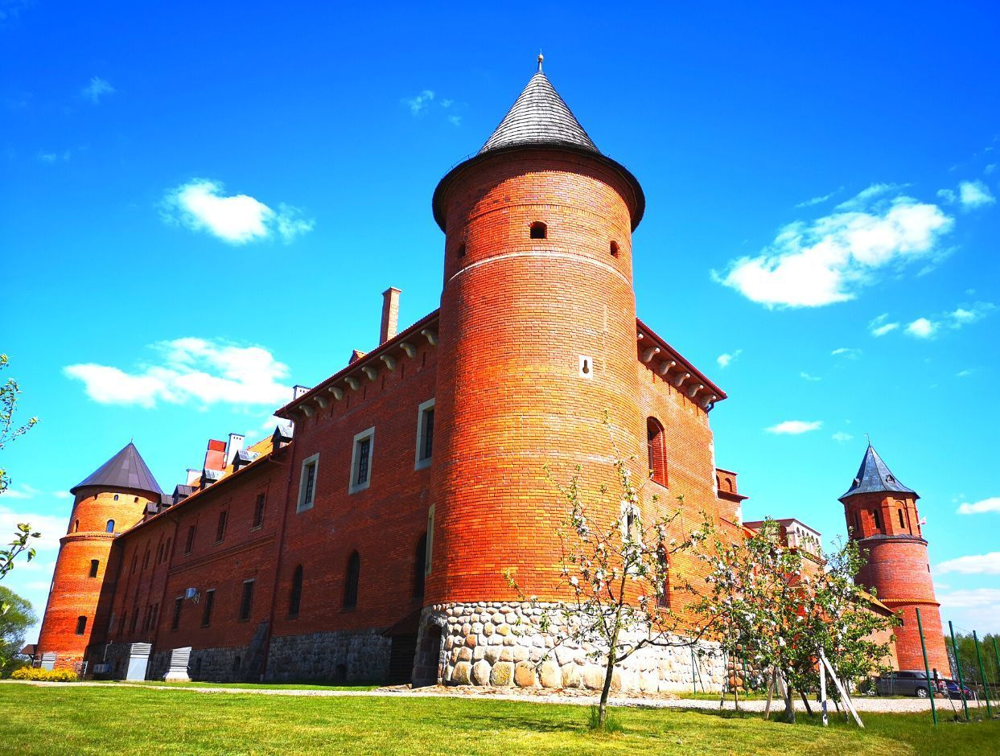
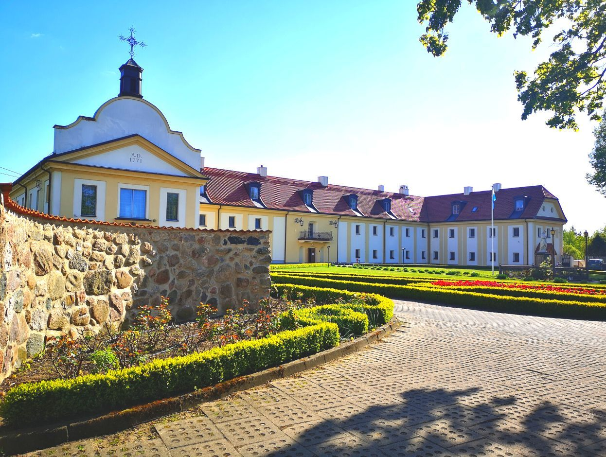

55 €
2024-05-11vietų yra55 €
KELIONĖS PROGRAMA
Daili architektūra, įspūdingos bažnyčios, ramybe dvelkiantys parkai, kultūrų ir religijų įvairovė...
-
1
Balstoge
Didžiausias miestas šiaurės rytų Lenkijoje, įsikūręs Bialos upės pašonėje. Žavintis dailia architektūra, barokiniu senamiesčiu, įspūdingomis bažnyčiomis, parkais ir žinoma Lenkijos Versaliu tituluojamais - Branickių rūmais. Ekskursijos po Balstogę metu aplankysime populiariausias ir gražiausias miesto vietas:
Pasivaikščiosime po Branickių rūmų parką. Rūmai garsūs savo prancūziško stiliaus parku, sodais ir skulptūromis, todėl nuo seno vadinami Lenkijos Versaliu. Rūmų architektūros stilius taip pat puikiai perteikia barokinę eleganciją bei puošnumą. Šiuo metu rūmuose įsikūręs medicinos muziejus, tad jais pasigrožėsime iš išorės. Šiuos rūmus suplanavo Jan Klemens Branicki, vienas turtingiausių Lenkijos vyrų, kandidatavęs į Lenkijos karaliaus sostą.
Aplankysime ir netoliese esantį parką Planty, kuris džiugina šokančiais fontanais.
Janas Klemensas Branickis ne tik pastatė rūmus ir sodus, bet ir turėjo užmojų sukurti ištisą baroko miestą su bažnyčiomis ir rotuše. Tad ekskursiją tęsime po barokinį Balstogės senamiestį, Kosciuškos turgaus aikštę - ypač mėgiamą susibūrimo vietą. Čia akis džiugins puošnūs aikštės namų fasadai, kavinės, restoranai, poilsio erdvės ir žinoma miesto vizitinė kortelė - Rotušė. Matysime pagrindinę miesto šventovę - Šv. Marijos katedrą. 17 a. pastatyta katedra labiausiai išsiskiria savo architektūra, nes menininkai puikiai suderino skirtingus architektūros stilius. Pro akis neprasprūs ir kitos ne mažiau įspūdingos miesto šventovės. Susipažinę su Balstoge turėsime laisvo laiko - savarankiškai pasivaikščioti, nusipirkti lauktuvių, pamatyti dar neatrastas Balstogės vietas.
   -
2
Supraslės ikonų muziejus
Supraslė - senasis stačiatikių kultūros centras, garsus savo įspūdingo dydžio cerkve ir vienuolynu. Vienuolyno komplekse pamatysime cerkvę (iš išorės). Apsilankysime viename didžiausių Europoje Ikonų muziejuje, kuris įkurtas vienoje iš vienuolyno dalių. Jame saugoma apie 1200 ikonų. Seniausia ikona siekia net 18 a. Savarankiškai apžiūrėsime šiuolaikiškai ir įtraukiančiai įrengtą ikonų ekspoziciją.
 -
3
Tykocinas
Aplankysime Tykociną - netoli Balstogės esantį nedidelį, žavų miestelį. Jis vadintas baroko perlu, nes 18 a. jį statė ir grąžino Branickių giminė (Balstogės Branickių rūmų savininkai). Tad pasivaikščiosime po šį dailų ir turtingą istoriją menantį miestą. Ir šiame miestelyje pastebima religijų įvairovė, maldos namus turėjo katalikai, žydai, stačiatikiai. Apžiūrėsime puošnią Švč. Trejybės bažnyčią, Tykocino sinagogą, - antrus seniausius žydų maldos namus Lenkijoje.
Ne kartą Tykocine apsilankydavo Lenkijos karaliai ir Lietuvos didieji kunigaikščiai. Pamatysime (iš išorės) visai neseniai atstatytą Tykocino pilį, kurioje gyveno Žygimantas Augustas. Šiandien matoma pilis yra XVI a. pastatytos Žygimanto Augusto pilies rekonstrukcija, atkurta remiantis gausiomis iliustracijomis.
Kviečiame prasmingai ir turiningai praleisti laiką.
Į KAINĄ ĮSKAIČIUOTA
- Kelionė autobusu
- Kelių ir kuro mokesčiai
- Ekskursinė programa
- Kelionės vadovo paslaugos
Į KAINĄ NEĮSKAIČIUOTA
- Supraslės ikonų muziejus, lankytojo bilietas: suaugusiems ~20 zł./asm, su nuolaida ~10 zł./asm.
- Ekskursija Balstogėje (rusų k.) ~10 zł./asm. (Prieš kelionę būtina išsikeisti zlotų mokamiems objektams ir pietums)
- Bažnyčių lankymas - laisva auka
- Pietūs
- Asmeninės išlaidos
- Medicininių išlaidų draudimas
IŠVYKIMO VIETOS IR LAIKAS
-
Prašome atvykti 10 min. iki autobuso išvykimo
- Vilnius - ERGO stovėjimo aikštelė, Geležinio Vilko g. 6A, prie Gerosios Vilties žiedo; išvykimas 05:30, grįžimas tarp 00:00 ir 01:00
- Kaunas
- prie McDonald's, Savanorių pr. 321 (šalia yra nemokama automobilių stovėjimo aikštelė); išvykimas 07:00, grįžimas tarp 23:00 ir 24:00
- autobusų stotelė prie Šilainių Maxima, Šarkuvos g. 1A/Žemaičių pl. (Maxima pusėje); išvykimas 07:20
- Grigiškės - EMSI degalinė, prie autostrados, Neravų k.; išvykimas ~05:40
- Vievis - sustojimas link Kauno; išvykimas ~06:00
- Elektrėnai - degalinė ORLEN, prie autostrados, link Kauno; išvykimas ~06:10
- Žiežmariai - sustojimas link Kauno; išvykimas ~06:25
- Rumšiškės - sustojimas link Kauno; išvykimas ~06:40
- Alytus - degalinė Viada, prie autobusų stoties; išvykimas 08:20
- Lazdijai - degalinė Circle K Lazdijai, Nekrūnų k., Lazdijų r. (LT pasienis prie Lazdijų); išvykimas 09:00
- Marijampolė - aikštelė prie geležinkelio stoties; išvykimas ~08:10
KITOS PASTABOS
- Kelionei BŪTINAS galiojantis asmens dokumentas - asmens tapatybės kortelė arba pasas. Jų galiojimo laikas turi būti ne trumpesnis nei 3 mėn. kelionei pasibaigus
- Turėti Europos sveikatos draudimo kortelę (išduoda ligonių kasos)
- Vykstantiems į kelionę, rekomenduojame (neprivaloma) turėti papildomą 1 dienos medicininių išlaidų draudimą, garantuojantį būtinosios medicinos pagalbos užsienyje ir papildomų išlaidų, susidariusių dėl draudiminio įvykio, apmokėjimą. Tokį draudimą galite įsigyti internetu draudimo bendrovėse, bankuose... Vienas iš jų: https://www.draudimas.lt/kelioniu-draudimas
- Informaciją atsiųsime trumpąja SMS žinute jūsų nurodytu telefono numeriu:
- kad susirinko grupė - 3-4 d. iki kelionės pradžios
- autobuso valstybinį numerį ir sėdimas vietas (pagal bilieto įsigijimo laiką: anksčiau nusipirkę bilietą sėdi arčiau priekio) - 1-2 d. iki kelionės pradžios
- Kelionės vadovas autobuse veda programą ir supažindina su lankomais objektais
- Kelionės vadovas lankomuose objektuose ekskursijų neveda
- Lankomų objektų skaičius, eiliškumas ir kainos gali kisti
- Turėkite atsigerti, kepurę, skėtį, lietpaltį... (pagal orų prognozes)
- Keliaujant rugsėjo-balandžio mėn., rekomenduojame turėti atšvaitus dėl jūsų saugumo
- Ši kelionė nėra pritaikyta riboto judumo asmenims
Kelionę organizuoja: VšĮ „Prasmingam gyvenimui“
KELIONĖS PROGRAMA
Daili architektūra, įspūdingos bažnyčios, ramybe dvelkiantys parkai, kultūrų ir religijų įvairovė...
-
1
Balstoge
Didžiausias miestas šiaurės rytų Lenkijoje, įsikūręs Bialos upės pašonėje. Žavintis dailia architektūra, barokiniu senamiesčiu, įspūdingomis bažnyčiomis, parkais ir žinoma Lenkijos Versaliu tituluojamais - Branickių rūmais. Ekskursijos po Balstogę metu aplankysime populiariausias ir gražiausias miesto vietas:
Pasivaikščiosime po Branickių rūmų parką. Rūmai garsūs savo prancūziško stiliaus parku, sodais ir skulptūromis, todėl nuo seno vadinami Lenkijos Versaliu. Rūmų architektūros stilius taip pat puikiai perteikia barokinę eleganciją bei puošnumą. Šiuo metu rūmuose įsikūręs medicinos muziejus, tad jais pasigrožėsime iš išorės. Šiuos rūmus suplanavo Jan Klemens Branicki, vienas turtingiausių Lenkijos vyrų, kandidatavęs į Lenkijos karaliaus sostą.
Aplankysime ir netoliese esantį parką Planty, kuris džiugina šokančiais fontanais.
Janas Klemensas Branickis ne tik pastatė rūmus ir sodus, bet ir turėjo užmojų sukurti ištisą baroko miestą su bažnyčiomis ir rotuše. Tad ekskursiją tęsime po barokinį Balstogės senamiestį, Kosciuškos turgaus aikštę - ypač mėgiamą susibūrimo vietą. Čia akis džiugins puošnūs aikštės namų fasadai, kavinės, restoranai, poilsio erdvės ir žinoma miesto vizitinė kortelė - Rotušė. Matysime pagrindinę miesto šventovę - Šv. Marijos katedrą. 17 a. pastatyta katedra labiausiai išsiskiria savo architektūra, nes menininkai puikiai suderino skirtingus architektūros stilius. Pro akis neprasprūs ir kitos ne mažiau įspūdingos miesto šventovės. Susipažinę su Balstoge turėsime laisvo laiko - savarankiškai pasivaikščioti, nusipirkti lauktuvių, pamatyti dar neatrastas Balstogės vietas.
-
2
Supraslės ikonų muziejus
Supraslė - senasis stačiatikių kultūros centras, garsus savo įspūdingo dydžio cerkve ir vienuolynu. Vienuolyno komplekse pamatysime cerkvę (iš išorės). Apsilankysime viename didžiausių Europoje Ikonų muziejuje, kuris įkurtas vienoje iš vienuolyno dalių. Jame saugoma apie 1200 ikonų. Seniausia ikona siekia net 18 a. Savarankiškai apžiūrėsime šiuolaikiškai ir įtraukiančiai įrengtą ikonų ekspoziciją.
-
3
Tykocinas
Aplankysime Tykociną - netoli Balstogės esantį nedidelį, žavų miestelį. Jis vadintas baroko perlu, nes 18 a. jį statė ir grąžino Branickių giminė (Balstogės Branickių rūmų savininkai). Tad pasivaikščiosime po šį dailų ir turtingą istoriją menantį miestą. Ir šiame miestelyje pastebima religijų įvairovė, maldos namus turėjo katalikai, žydai, stačiatikiai. Apžiūrėsime puošnią Švč. Trejybės bažnyčią, Tykocino sinagogą, - antrus seniausius žydų maldos namus Lenkijoje.
Ne kartą Tykocine apsilankydavo Lenkijos karaliai ir Lietuvos didieji kunigaikščiai. Pamatysime (iš išorės) visai neseniai atstatytą Tykocino pilį, kurioje gyveno Žygimantas Augustas. Šiandien matoma pilis yra XVI a. pastatytos Žygimanto Augusto pilies rekonstrukcija, atkurta remiantis gausiomis iliustracijomis.
Kviečiame prasmingai ir turiningai praleisti laiką.